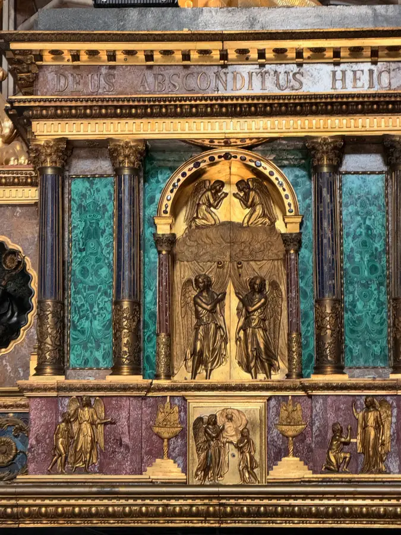
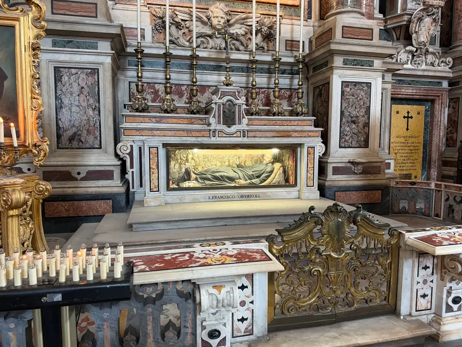

We decided to stay in Naples one more night, and the whole plan shifted by a day. Never mind, a plan is written precisely in order to be changed. Yesterday we walked around the city and realized that one day isn't enough for it.
In the morning we went to the Gesù Nuovo. From the outside this church looks more like a fortress: the whole facade is in faceted stones, as if it had been laid with huge diamonds. Once it was the palace of the noble Sanseverino family; then it was given to the Jesuits and rebuilt as a church. They kept the facade, and rightly so. Inside, on the contrary, it's all Baroque: marble, gilding, frescoes. The contrast is such that for a second it seems you've walked in through the wrong door.

Then the street of San Gregorio Armeno. This is that very street where nativity scenes and figurines for them are sold all year round. Christmas never ends here. The street is named after the old monastery of St Gregory the Armenian — that same Gregory the Illuminator who baptized Armenia. So even here it's not without saints. Besides shepherds, magi and little sheep, the craftsmen model bakers, fishermen, merchants, and, they say, footballers and politicians while they're at it. A Neapolitan nativity scene is not only Bethlehem, it's the whole city around the manger. And there's something very true in that: Christ is born not in a museum but in the middle of ordinary life, with its bazaar and noise.


Next — the Pio Monte della Misericordia. It's an old Neapolitan confraternity of mercy, and in its church hangs Caravaggio's “Seven Works of Mercy.” The painting was made in 1607 for this very altar and since then, as far as I know, has never left. The works of mercy are from the Gospel of Matthew, from the Lord's words about the Last Judgment: to feed the hungry, give drink to the thirsty, take in the stranger, clothe the naked, visit the sick and the prisoner. The seventh, burying the dead, the Church added later. In Caravaggio all seven happen at once, on one dark Neapolitan street, and from above the Mother of God with the Child looks on. No solemnity — people helping people, each as best they can. A ready-made sermon, only without words.
Then the cathedral. Here the blood of St Januarius, the patron saint of Naples, is kept. And inside the cathedral there is another church — Santa Restituta, an ancient fourth-century basilica. The cathedral later grew up around it, and it ended up inside, like a matryoshka doll. Such places are especially dear to me: here Christians of the still-undivided Church prayed, when there were neither “Orthodox” nor “Catholics,” but simply the Church.


In the evening we wanted to go up to the Vomero, the hill from which all of Naples can be seen from above. We confidently arrived at the Montesanto funicular. The funicular is closed for repairs until May. We did manage to buy tickets, though — six of them at 1.90 euros each. The lesson cost us little, only eleven euros forty cents, and it goes like this: before going somewhere, check whether it's working at all. There are four funiculars in Naples, by the way, and the Centrale and Chiaia funiculars, and the metro, also go up to the Vomero. We'll remember for next time.
Tomorrow we move on, to the sea.